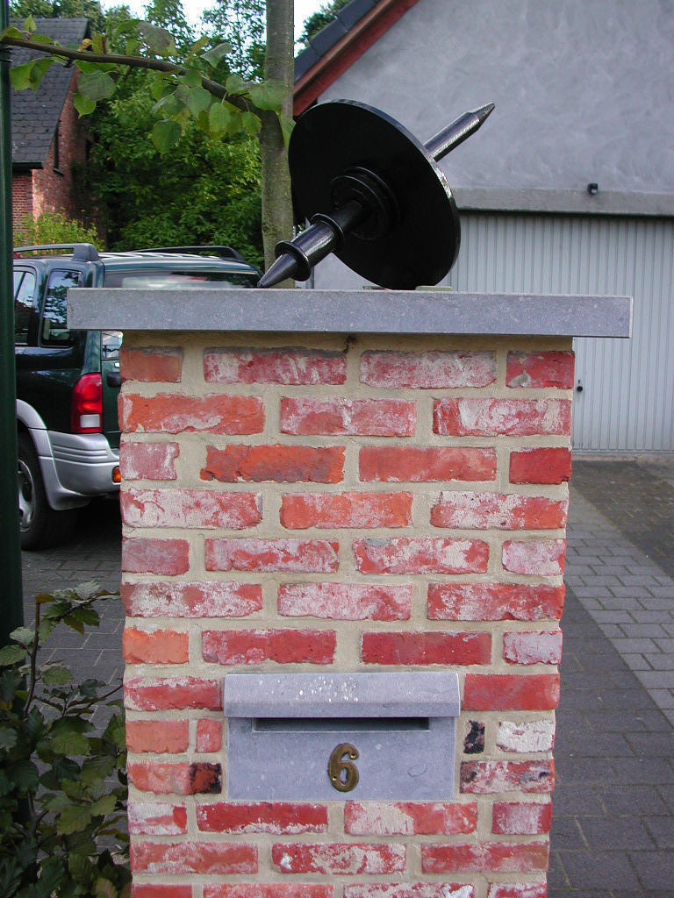
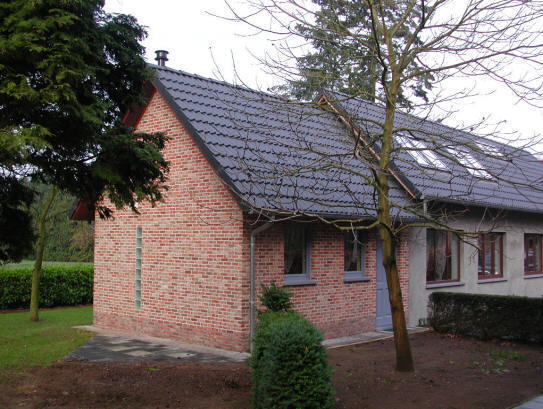
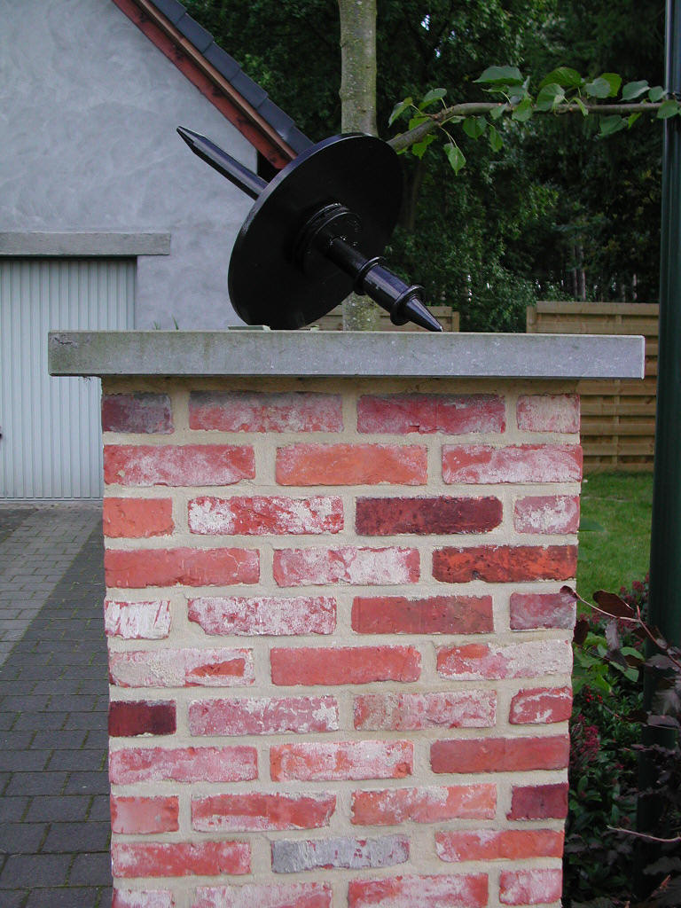
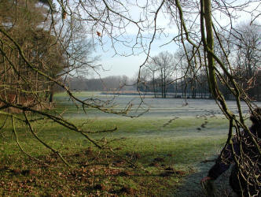
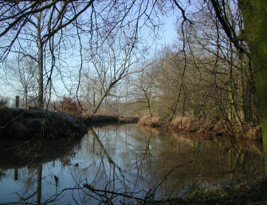

|
|
|
't SLIJPERIJTJE is een privé-initiatief dat nauw samenwerkt met V.V.V.-Toerisme Vorselaar en een bijdrage wil leveren aan de ontwikkeling van het toerisme in Vorselaar. |
|  |
 |
 |
|
|
Neem even de tijd en je zult het merken: Vorselaar is zeker een bezoekje waard, en het SLIJPERIJTJE is de ideale uitvalsbasis, weg van de drukte van het centrum en toch overal dichtbij. |
|
|
|
Vorige eeuw werd in Vorselaar volop diamant bewerkt. Overal verschenen kleine werkplaatsen, zo ook op de Niemandshoek nr. 6. Tien tot twaalf mensen beoefenden hier hun stiel en verdienden goed hun boterham. Door de terugval in de tewerkstelling in de diamantsector hebben de kleine bedrijven één voor één de deuren moeten sluiten. In 2003 is deze oude slijperij gerenoveerd tot een volwaardige vakantiewoning. Ruimte, kleuren, licht en het veelvuldig gebruik van natuurlijke elementen waren de ingrediënten van de verbouwers. |
|
een moderne keuken met elektrisch keramisch kookvuur, dampkap, microgolfoven en ijskast,

een ruime living met zithoek, tv en internetaansluiting


een badkamer met lavabo, douche en wc,
een gezamenlijke slaapzolder met één tweepersoonsbed en drie éénpersoonsbedden,
op het gelijkvloers een aparte slaapkamer met twee éénpersoonsbedden,
mogelijkheid tot bijplaatsen van een kinderbedje,
een berging,
|
De "place to be" voor wandelaars, fietsers en liefhebbers van landelijke rust. |
Bij het "SLIJPERIJTJE" mag gerust deze term gebruikt worden.
Tijdens een verblijf zul je zeker ondervinden dat de slogan:
"Vorselaar, groene wandelgemeente"
|
|
zomaar niet uit de lucht gegrepen is. Dit is ook de Provinciale dienst voor Toerisme (T.P.A.) niet ontgaan want in 2006 lauwerden zij de Vorselaarse VVV voor haar verzorgde wandelwegen en in 2017 is zelfs de wandeling door natuurgebied Lovenhoek uitgeroepen tot "Mooiste wandeling van de provincie Antwerpen". Volgende wandelingen zijn door VVV-Toerisme uitgestippeld op basis van het wandelknooppunten netwerk. |
|
|
|
|
|
|  |
Het Schranshoevepad Het Kasteelpad Ten Troonpad Het Lovenhoekpad Het Stroperspad Rivier- en Boswandeling Mie Broos natuurwandeling Monumentenwandeling Zandwandeling
|
 |
|
Als fietstochten hebben we in Vorselaar de "Kardinaal Van Roey" fietsroute en de Bart Wellensroute". Gedetailleerde
info
over de verschillende tochten is ter plaatse (Slijperijtje) te bekomen. |
In sportcentrum "De Dreef" kan je terecht voor toeristische info, allerlei zaalsporten, een drankje en een hapje en buiten hebben de kinderen een toffe speeltuin ter beschikking, de jeugd kan zich amuseren op het skate-terrein of, voel je je hier te oud voor, dan kan je nog altijd een balletje slaan op de verzorgde minigolf.
Het fietsknooppunt- en wandelnetwerk van de Provincie Antwerpen, met zijn duizenden kilometers fiets- en wandelplezier, ligt op 100 m van uw verblijfplaats.
Op wandelafstand vind je de mooiste "Wandeling van het jaar" 2017 in natuurgebied Lovenhoek en de prachtige waterburcht van Vorselaar.
En op fietsafstand: de watermolen te Grobbendonk met de prachtige Netevallei, het sport- en recreatiedomein BLOSO, Toeristentoren en Hidrodoe te Herentals, de Lilse Bergen, Bobbejaanland enz.
Wil je Vorselaar mee-beleven dan kan je uitgebreide info raadplegen op de site van de gemeente Vorselaar.
Een verblijf in het "SLIJPERIJTJE" kost:
1 nacht: € 70
2 nachten: € 140
3 nachten: € 210 (*)
Midweek: € 240 (van maandag tot vrijdag)
Week (7 nachten): € 420 (*)
* per bijkomende nacht: € 60
Het verbruik van gas, elektriciteit, water en het gebruik van internet is in de prijs begrepen.
Bedlinnen
verplicht te
gebruiken of slaapzak.
Mogelijkheid tot huren van bed-en badlinnen à € 9 pp.
Het
slijperijtje wordt u
proper aangeboden, we verwachten van u dat u het ook zo achterlaat.
eindschoonmaak mogelijk à €
45
Voorschot/waarborg van € 100 storten op reknr
IBAN-nr: BE13-8335-3374-0039
De BIC (swift-code) is: GKCCBEBB
Uw reservatie is pas geldig na ontvangst van bovenvermelde waarborg.
een periode vangt aan vanaf 16.00 uur en eindigt om 12.00 uur
gelieve binnenshuis niet te roken.
-------
Ben je geïnteresseerd?
Doe dan navraag of uw periode nog vrij is via mail vakantiewoning@slijperijtje.be
of
via telefoon 0032 (0)14
514788
Op de site van de Gemeente Vorselaar vind je alle info die een toerist nodig heeft.
Het familiefestival Na Fir Bolg is één van de grootste manifestaties die plaatsvinden in Vorselaar. In Vlaanderen gekend en geprezen om zijn gezelligheid, komt groot en klein er aan zijn/haar folk-trekken.
Hiervoor heb je Adobe Reader nodig.

|
Luc Van Hoof - Lief De Beuckeleer |
|
|
e-mail: |
vakantiewoning@slijperijtje.be |
|
telefoon: |
0032 (0)14 514788 |
|
GSM |
0032 (0)477 914839 (Lief) |
|
adres: |
Niemandshoek 6 |
|
|
2290 Vorselaar |
|
|
Provincie Antwerpen |
|
|
België |